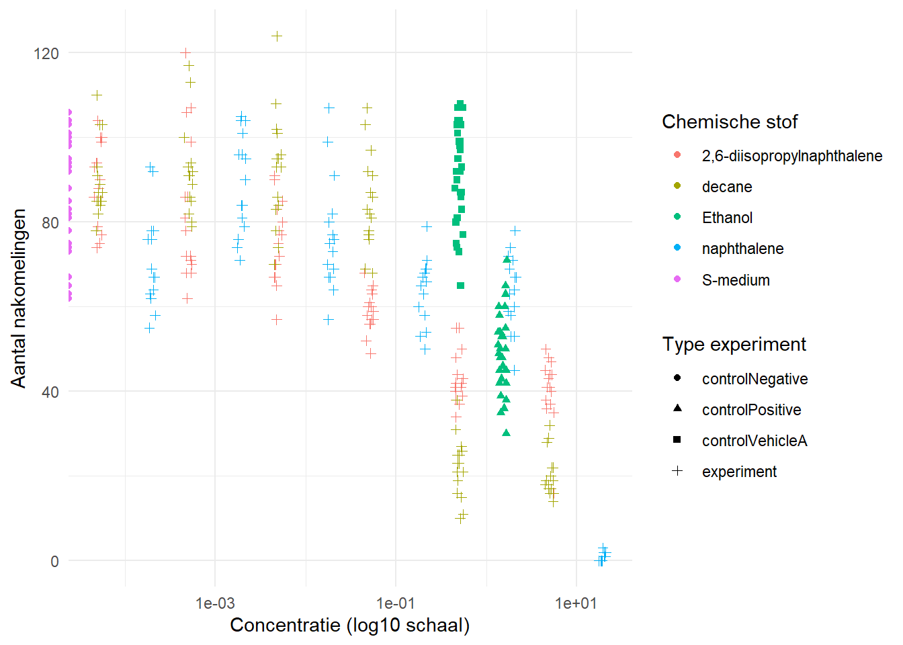
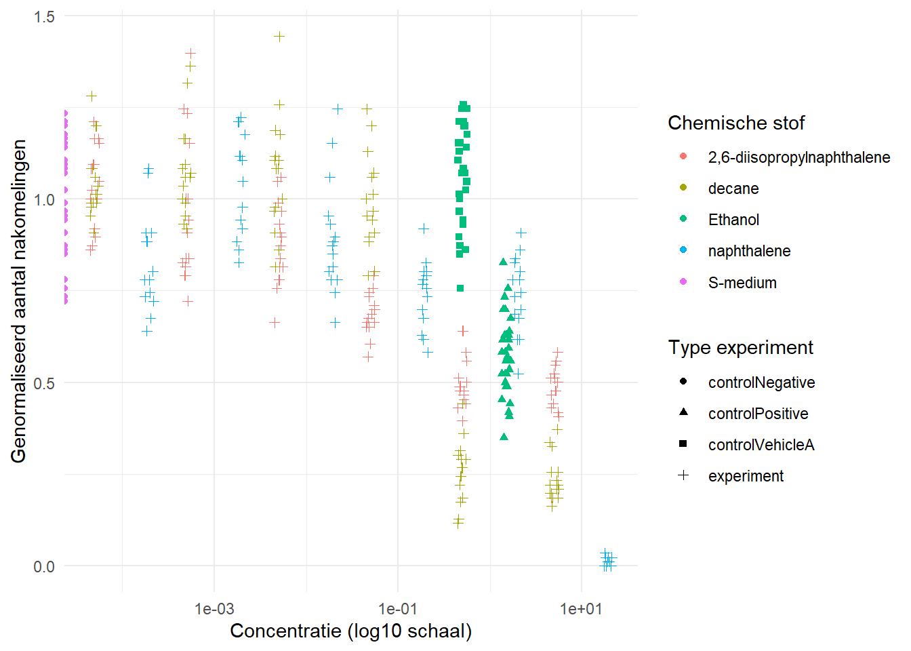

5 opdracht 4
5.1 opdracht 4a. Een data analyse van een ander reproduceren
library(readxl)
data <- read_excel("C:/Users/luuke/Documents/ds2project23/project/CE.LIQ.FLOW.062_Tidydata.xlsx")
data$RawData <- as.numeric(data$RawData)
data$compName <- as.factor(data$compName)
data$compConcentration <- as.numeric(data$compConcentration)## Warning: NAs introduced by coerciondata$expType <- as.factor(data$expType)
library(ggplot2)
ggplot(data, aes(x = compConcentration, y = RawData,
color = compName, shape = expType)) +
geom_point(position = position_jitter(width = 0.05, height = 0)) +
scale_x_log10() +
theme_minimal() +
labs(x = "Concentratie (log10 schaal)",
y = "Aantal nakomelingen",
color = "Chemische stof",
shape = "Type experiment")## Warning in scale_x_log10(): log-10 transformation introduced infinite values.## Warning: Removed 6 rows containing missing values or values outside the scale range (`geom_point()`).
neg_control_mean <- mean(data$RawData[data$expType == "controlNegative"], na.rm = TRUE)
data$normalized <- data$RawData / neg_control_mean
mean(data$normalized[data$expType == "controlNegative"])## [1] 1# moet ~1 zijn
ggplot(data, aes(x = compConcentration, y = normalized,
color = compName, shape = expType)) +
geom_point(position = position_jitter(width = 0.05, height = 0)) +
scale_x_log10() +
theme_minimal() +
labs(x = "Concentratie (log10 schaal)",
y = "Genormaliseerd aantal nakomelingen",
color = "Chemische stof",
shape = "Type experiment")## Warning in scale_x_log10(): log-10 transformation introduced infinite values.
## Removed 6 rows containing missing values or values outside the scale range (`geom_point()`).
Conclusie: De dataset is correct ingelezen en de structuur van de data is grotendeels geschikt voor analyse. RawData is al numeriek en kan direct gebruikt worden, terwijl compName terecht als factor is gezet voor categorische analyses en visualisaties. De variabele compConcentration is geconverteerd van character naar numeric, maar hierbij zijn enkele NA-waarden ontstaan door niet-numerieke invoer in de oorspronkelijke data. Dit heeft beperkte invloed op de analyse, maar vereist aandacht bij verdere visualisaties. Over het algemeen is de data bruikbaar voor verdere statistische analyse en visualisatie.Controles in het experiment Negatieve controle (controlNegative): Wormen zonder blootstelling aan een toxische stof. Dit geeft de baseline reproductie. Positieve controle: Een stof waarvan bekend is dat deze toxisch is. Hiermee controleer je of het experiment werkt. Vehicle controle: Bevat alleen het oplosmiddel (bijv. DMSO). Hiermee controleer je of het oplosmiddel zelf geen effect heeft. Nut van controles Negatief: referentiepunt voor normale groei Positief: valideert experimentele gevoeligheid Vehicle: controleert bias door oplosmiddelen
Samen zorgen ze ervoor dat effecten correct geïnterpreteerd worden.
Door te normaliseren:
worden experimenten vergelijkbaar corrigeer je voor variatie tussen metingen druk je resultaten uit als relatief effect
Een waarde van:
1 = geen effect <1 = remming (toxisch effect) >1 = stimulatie
5.2 Stappenplan voor een dose-response analyse
Voor het kwantificeren van het effect van de verschillende chemicaliën op de reproductie van C. elegans kan een dose-response analyse worden uitgevoerd met behulp van een log-logistisch model.
Vervolgens wordt een model gefit waarin de genormaliseerde responsvariabele wordt gemodelleerd als functie van de concentratie van het chemische middel. Indien meerdere stoffen worden geanalyseerd, kan per stof een aparte curve worden geschat binnen hetzelfde model.
Daarna wordt een samenvatting van het model bekeken om inzicht te krijgen in de geschatte parameters, zoals de helling van de curve en de minimale en maximale respons.
Om de resultaten visueel te beoordelen, wordt een dose-response curve geplot, waarbij de concentratie doorgaans op een logaritmische schaal wordt weergegeven. Dit maakt het eenvoudiger om trends over meerdere ordes van grootte te interpreteren.
Vervolgens wordt de IC50-waarde bepaald. Dit is de concentratie waarbij 50% van het maximale effect wordt waargenomen. Deze parameter is een belangrijke maat voor de toxiciteit van een stof: hoe lager de IC50, hoe sterker het effect van de stof.
Ten slotte kan modeldiagnostiek worden uitgevoerd, bijvoorbeeld door de residuen te inspecteren. Dit helpt om te beoordelen of het gekozen model een goede beschrijving van de data geeft.
5.3 opdracht 4 Een artikel beoordelen op reproduceerbaarheid
Link: https://journals.plos.org/plosone/article?id=10.1371/journal.pone.0278495
onderzoeksvraag Onderzoeksvraag De studie onderzoekt hoe influenza zich verspreidt binnen een varkenshouderij (tussen varkens onderling) en tussen varkens en mensen, en in hoeverre interventies (zoals vaccinatie of beschermingsmaatregelen) deze transmissie kunnen beperken.
sammenvatting metode
In deze studie wordt een stochastisch compartimenteel model ontwikkeld. Dit type model verdeelt de populatie in verschillende compartimenten en simuleert willekeurige transmissieprocessen.
samenvatting resultaten
Influenza zich snel kan verspreiden binnen een varkenspopulatie Transmissie naar mensen mogelijk is, vooral zonder beschermingsmaatregelen Interventies zoals vaccinatie en het dragen van beschermingsmiddelen de verspreiding aanzienlijk kunnen verminderen
| Criteria | Beoordeling | Toelichting |
|---|---|---|
| Study Purpose | Ja | De onderzoeksvraag staat duidelijk in de introductie: het modelleren van influenza transmissie binnen en tussen soorten |
| Data Availability Statement | Ja | Er is een aparte “Data Availability” sectie aanwezig |
| Data Location | Supplement / repository | Data en code zijn beschikbaar via supplementen en/of externe repository |
| Study Location | Ja VS | De studie is gebaseerd op een varkenshouderijsetting in de Verenigde Staten |
| Author Review | Goed | Professionele affiliaties en e-mailadressen aanwezig |
| Ethics Statement | Ja | Vermeld dat er geen direct experimenteel onderzoek op mensen/dieren is uitgevoerd modelstudie |
| Funding Statement | Ja | Financiering wordt expliciet vermeld |
| Code Availability | Ja | R code is beschikbaar gesteld |
De data en R code van het artikel A stochastic compartmental model to simulate intra- and inter-species influenza transmission in an indoor swine farm zijn te vinden via de Data Availability sectie. Hier wordt verwezen naar de supplementary materials waarin de scripts en benodigde bestanden staan.
De R code wordt gebruikt om een simulatiemodel van influenza verspreiding uit te voeren. In de code worden eerst verschillende parameters ingesteld, zoals transmissiesnelheid en hersteltijd. Daarna wordt een stochastisch model gebruikt om de verspreiding van het virus te simuleren binnen de varkenspopulatie en tussen varkens en mensen. De code draait meerdere simulaties en slaat de resultaten op. Vervolgens worden deze resultaten gevisualiseerd in grafieken, bijvoorbeeld het aantal geïnfecteerde individuen over de tijd.
De leesbaarheid van de code zou ik beoordelen met een 3/5. De code is op zich te volgen, maar er staan weinig commentaarregels bij en sommige variabelen zijn niet meteen duidelijk. Daardoor kost het wat tijd om goed te begrijpen wat er precies gebeurt.
Voor het reproduceren van de analyse heb ik de code en data gedownload en in een nieuw R-project gezet. Bij het uitvoeren van de code liep ik tegen een paar problemen aan. Sommige packages waren niet geïnstalleerd en moesten eerst worden toegevoegd. Daarnaast moesten een aantal bestandspaden worden aangepast zodat R de data kon vinden. Ook heb ik een set.seed() toegevoegd om de resultaten reproduceerbaar te maken, omdat het om een stochastisch model gaat.
Na deze aanpassingen lukte het om een figuur (een infectiecurve) te reproduceren. De resultaten kwamen grotendeels overeen met die in het artikel, al kunnen kleine verschillen optreden door de random component in het model.
De reproduceerbaarheid van de code beoordeel ik met een 3/5. De code is beschikbaar en werkt uiteindelijk wel, maar niet zonder kleine aanpassingen. Met betere documentatie en een duidelijke handleiding zou dit makkelijker zijn geweest.